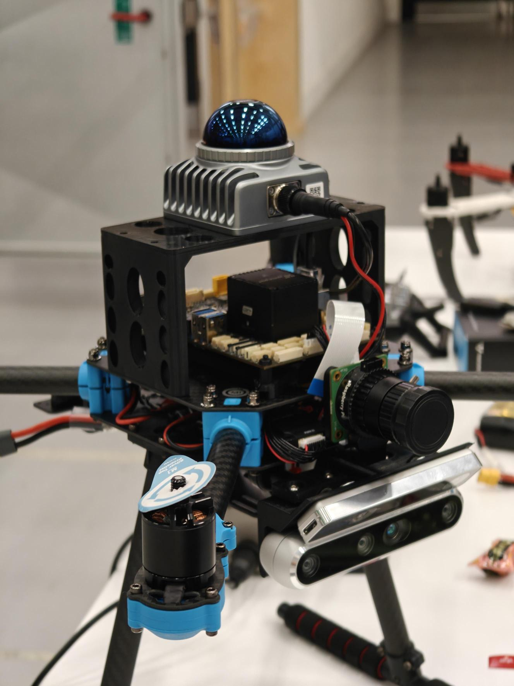
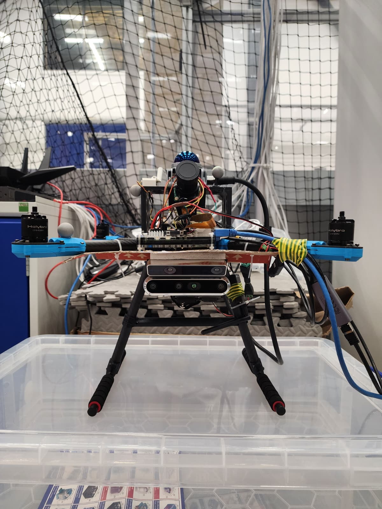

Sim-to-Real Transfer¶
Based on Chapter 7.2 and the deployment pipeline of: Z. Ruso, "Reinforcement Learning for Cooperative Multi-View Depth-Based Perception in Autonomous UAV Navigation," MSc Thesis, UCL, 2025.
Overview¶
All training and evaluation in this project were conducted in simulation. Transferring the learned dual-view navigation policy to a real UAV is a critical next step. This document describes the planned sim-to-real pipeline, the hardware platform, the deployment architecture, and the existing sim2real code in the repository.


Figure 7.1: Sim-to-real setup — Holybro X500 V2 with Intel RealSense D455 (left) and NVIDIA Jetson Orin NX for onboard inference (right).Target Hardware Platform¶
| Component | Specification |
|---|---|
| Airframe | Holybro X500 V2 frame kit |
| Compute | NVIDIA Jetson Orin NX (edge AI) |
| Depth sensor (onboard) | Intel RealSense D455 |
| Depth sensor (exocentric) | Intel RealSense D455 (static/peer mount) |
| Flight controller | PX4 autopilot |
| Middleware | ROS 2 Humble |
| Offboard control | MAVSDK Offboard mode |
Deployment Architecture¶
┌──────────────────────────────────────────────────┐
│ Jetson Orin NX (onboard) │
│ │
│ ┌──────────┐ ┌───────────┐ ┌──────────────┐ │
│ │ D455 │ │ VAE │ │ Policy │ │
│ │ Driver │──│ Encoder │──│ (GRU+Actor) │ │
│ │ (ROS 2) │ │ (TensorRT)│ │ (TensorRT) │ │
│ └──────────┘ └───────────┘ └──────┬───────┘ │
│ │ │
│ ┌──────────┐ ┌─────▼───────┐ │
│ │ Exo cam │ ┌───────────┐ │ Velocity │ │
│ │ latent │──│ Fusion │ │ commands │ │
│ │ (WiFi/ │ │ Gate │ │ (MAVSDK │ │
│ │ wired) │ └───────────┘ │ Offboard) │ │
│ └──────────┘ └──────┬──────┘ │
│ │ │
└───────────────────────────────────────┼──────────┘
│
┌─────────▼─────────┐
│ PX4 Flight Stack │
│ (uORB ↔ RTPS) │
└───────────────────┘
Latency Budget¶
The target is sub-50 ms end-to-end latency from depth frame to velocity command:
| Stage | Target latency |
|---|---|
| Depth frame capture | ~5 ms |
| VAE encoding (TensorRT FP16/INT8) | ~5-10 ms |
| Fusion + Policy forward (TensorRT) | ~5-10 ms |
| ROS 2 transport + MAVSDK command | ~5-10 ms |
| Total | < 50 ms |
Network compilation uses TensorRT with FP16 or INT8 quantization to meet this budget on the Jetson Orin NX.
Communication: Exocentric Camera¶
The exocentric camera's depth frame (or, preferably, its 64D VAE latent) must be transmitted to the drone. Two approaches:
Option A: Transmit raw depth (high bandwidth)¶
- Requires ~480x270x2 bytes = ~250 KB per frame at 30 Hz = ~60 Mbps
- Viable over wired connection or high-bandwidth WiFi
Option B: Transmit compressed latent (low bandwidth)¶
- Only 64 x 4 bytes = 256 bytes per frame = ~60 Kbps at 30 Hz
- Viable over any WiFi link, even degraded
- Requires a compute device at the exocentric camera (e.g., another Jetson, Raspberry Pi with accelerator)
Option B is strongly preferred — transmitting compact 64D latents rather than full images justifies the VAE architecture and is practical even under bandwidth constraints.
Existing Sim2Real Code¶
The repository includes a ROS-based inference pipeline under aerial_gym/sim2real/:
| File | Purpose |
|---|---|
sample_factory_ros_node.py |
ROS node: subscribes to depth images + odometry, runs policy, publishes velocity commands |
sample_factory_inference.py |
Loads Sample Factory checkpoint and wraps inference |
nn_inference_class.py |
Neural network inference wrapper |
vae_image_encoder.py |
VAE encoder for real-time depth → latent |
vae.py |
VAE model definition (matches training) |
config.py |
ROS topic names, image dimensions, action scaling, filter parameters |
Key Configuration (config.py)¶
IMAGE_WIDTH = 480
IMAGE_HEIGHT = 270
LATENT_SPACE = 64
ACTION_DIMS = 4
# ROS Topics
IMAGE_TOPIC = "/d455/depth/image_rect_raw_throttled"
ODOM_TOPIC = "/mavros/local_position/odom_in_map"
ACTION_PUB_TOPIC = "/cmd_vel"
# Action scaling
SPEED_MAGNITUDE = 1.5
YAW_RATE_MULTIPLIER = 1.2 * pi / 3.0
MAX_YAW_RATE = pi / 3.0
# Inference
device = "cuda:0"
USE_FILTERED_ACTIONS = True
ACTION_FILTER_BETA = 0.8 # EMA smoothing
ROS Node Pipeline¶
The RlNavClass in sample_factory_ros_node.py:
- Subscribes to
/d455/depth/image_rect_raw_throttled(depth images) - Subscribes to
/mavros/local_position/odom_in_map(odometry) - Encodes depth through VAE → 64D latent
- Constructs observation vector (proprioception + latent)
- Runs policy inference (Sample Factory checkpoint)
- Applies EMA filter to actions (beta=0.8 for smoothing)
- Publishes velocity commands to
/cmd_vel
PX4 Integration (Experimental)¶
For embedded deployment directly on the flight controller, a separate pipeline exists using TensorFlow Lite Micro (TFLM):
Conversion Pipeline¶
PyTorch model (.pth)
→ PyTorch → ONNX → TensorFlow → TFLite → TFLite Micro (.tflite)
→ xxd -i → C array (.cc)
→ Compiled into PX4 firmware (mc_nn_control module)
-
Setup conversion environment (separate from training):
-
Convert trained model:
-
Generate C array:
-
Integrate into PX4: Copy array into
src/modules/mc_nn_control/control_net.cpp
PX4 Build with Neural Module¶
git clone --recurse-submodules -b for_paper \
https://github.com/SindreMHegre/PX4-Autopilot-public.git
git fetch upstream --tags
bash ./Tools/setup/ubuntu.sh
# Add TFLM submodule and build...
make px4_sitl_neural # or px4_fmu-v6c_neural for hardware
See docs/9_sim2real.md for the complete PX4 installation and build guide.
Sim-to-Real Transfer Strategies¶
Why Depth Works¶
Depth cameras provide geometric information largely invariant to appearance changes (lighting, textures, colors). This is a key advantage for sim-to-real: the policy trained on simulated depth should transfer more directly than RGB-trained policies.
Domain Randomization (already in training)¶
The curriculum already applies several randomizations designed for sim-to-real:
| Randomization | Purpose |
|---|---|
| Gaussian depth noise | Emulates real sensor noise characteristics |
| Pixel dropout | Emulates missing/invalid depth pixels |
| Frame freeze/blank | Emulates sensor stalls and dropouts |
| Camera mount jitter | Emulates imprecise mounting on real platform |
| State/pose noise | Emulates IMU and estimator noise |
| Force/torque disturbances | Emulates unmodeled aerodynamic effects |
| Gate size variation | Generalizes across aperture sizes |
| Obstacle randomization | Generalizes across clutter configurations |
Additional Steps for Real Deployment¶
- Camera calibration: Verify D455 intrinsics/extrinsics match simulation parameters
- System identification: Measure real platform mass, inertia, motor constants (see
docs/9_sim2real.md"Optimizing for your platform") - Action scaling verification: Confirm velocity command scaling matches PX4 controller expectations
- Latent space validation: Compare VAE latent distributions between simulated and real depth frames
- Observation pipeline verification: Ensure depth normalization (clip to [0.4, 20.0], scale to [0, 1]) matches training
- RNN warm-up: Allow several steps of observation before trusting policy outputs (cold-start hidden states)
- Safety envelope: Implement hardware-level velocity and position limits independent of the policy
Known Limitations¶
- Renderer gaps: Simulation excludes rolling shutter, motion blur, multipath interference, dynamic lighting
- Dynamics gaps: Omits propwash, blade flapping, ground effect, aerodynamic interference
- Perfect synchronization: Simulation assumes zero-latency, synchronized camera feeds; real systems have communication delays
- Identical cameras: Both cameras in simulation have identical, perfectly calibrated intrinsics; real systems may differ
- Static obstacles: Training uses only static obstacles; real environments may have dynamic objects
- Oracle exocentric placement: Simulation uses fixed geometric conventions for the static camera; real placement is constrained by physical access
File Index¶
| File | Purpose |
|---|---|
aerial_gym/sim2real/sample_factory_ros_node.py |
ROS inference node |
aerial_gym/sim2real/sample_factory_inference.py |
Sample Factory checkpoint loader |
aerial_gym/sim2real/nn_inference_class.py |
NN inference wrapper |
aerial_gym/sim2real/vae_image_encoder.py |
Real-time VAE encoding |
aerial_gym/sim2real/vae.py |
VAE model (matches training) |
aerial_gym/sim2real/config.py |
ROS topics, dimensions, scaling |
docs/9_sim2real.md |
PX4 integration guide |
resources/conversion/ |
PyTorch → TFLite conversion tools |